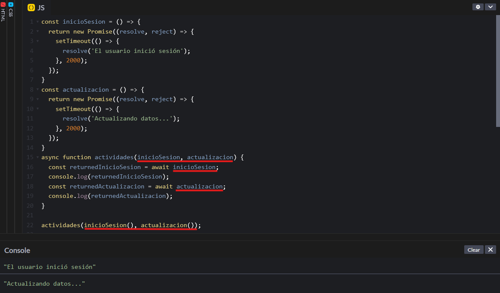

Al igual que se puede manejar la asincronía mediante
.then, también se puede manejar mediante
async/await. La diferencia entre
.then y async/await es que, en el
primer caso, al realizar múltiples promesas el resultado de
ellas se devuelve a la vez, mientras que, utilizando
async/await
se puede establecer el orden en el que se devuelven las
promesas. Además, al utilizar .then el resultado se
muestra en orden de llegada, es decir si hacemos dos promesas,
una para iniciar sesión y otra para actualizar los datos, es
posible que la segunda se ejecute antes que la primera, lo cual
no tendría sentido porque se estaría actualizando antes de
iniciar sesión en la cuenta. Para evitar eso, se utiliza
async/await.
const inicioSesion = () => {
return new Promise((resolve, reject) => {
setTimeout(() => {
resolve('El usuario inició sesión');
}, 2000);
});
}
const actualizacion = () => {
return new Promise((resolve, reject) => {
setTimeout(() => {
resolve('Actualizando datos...');
}, 2000);
});
}
async function actividades() {
const returnedInicioSesion = await inicioSesion();
console.log(returnedInicioSesion);
const returnedActualizacion = await actualizacion();
console.log(returnedActualizacion);
}
actividades();
Creamos dos promesas, una para el inicio de sesión y otra para
actualizar los datos una vez el usuario ha iniciado sesión. A
cada una le ponemos un setTimeout para simular que
consulta alguna base de datos y tarda 2 segundos en devolver el
resultado. Y, ahora, como queremos que primero se ejecute el
inicio de sesión y luego se actualicen los datos, usaremos
async/await. Creamos una función actividades, que
regule el inicio de sesión y la actualización, y en su interior
creamos dos variables, una que ejecute la promesa de inicio de
sesión
const returnedInicioSesion = await inicioSesion();
y otra que regule la promesa de la actualización
const returnedActualizacion = await actualizacion();. Así, nos aseguramos de que se ejecuten en ese orden. Al crear
la función actividades hay que escribir
async function actividades() {} y luego cada vez
que queramos ejecutar una promesa hay que poner
await antes de llamar a la función que contiene la
promesa.
De esta forma el resultado queda tal que así: llamamos a la función actividades, tras 2 segundos obtenemos 'El usuario inició sesión' y, tras otros 2 segundos, obtenemos 'Actualizando datos...'
Si en lugar de obtener cada resultado de manera independiente queremos obtener los dos resultados a la vez, asegurandonos de que siempre se ejecute primero el de inicio de sesión y después el de actualización, tendremos que modificar un poco el código anterior.

Los cambios realizados se muestran subrayados en rojo en la
imagen superior. En lugar de crear una función sin argumentos
actividades(), le pasamos dos argumentos, uno para
el inicio de sesión y otro para la actualización, cuyos nombres
no tienen por qué coincidir con los nombres de las funciones
reales. También tenemos que cambiar
await inicioSesion y
await actualizacion ya que ahora no tenemos que
ejecutar una función en sí, sino que tenemos que ejecutar la
función que pasemos como argumento. Finalmente, al llamar a la
función 'actividades' tenemos que pasar las funciones que
queremos ejecutar, inicioSesion() y
actualizacion().
El resultado es que, en lugar de esperar 2 segundos, obtener primero el resultado de inicioSesion y al de dos segundos obtener el de la actualización, espera dos segundos y devuelve ambos resultados, pero siempre en ese orden.
Con async/await también tenemos la posibilidad de
comunicarnos con APIs. La consulta se haría de la siguiente
manera:
async function consulta() {
const promesa = fetch('https://jsonplaceholder.typicode.com/posts');
const posts = await promesa.then(data => data.json());
console.log(posts);
}
consulta();
Creamos una función para realizar la consulta con la palabra
clave async al inicio. En su interior creamos una
variable que contiene la palabra clave fetch, que
ya incluye la creación de la promesa. Luego creamos otra
variable que contiene la promesa precedido por la palabra clave
await. Y a esa promesa le añadimos
.then(data => data.json()), es decir, queremos
convertir el resultado en formato json. Finalmente, imprimimos
los posts en la consola.
Al igual que en las promesas con .then podíamos
crear un error que se ejecutara cuando la promesa no se
resolvía, con async/await también se puede. Para
ello utilizaremos try/catch.
async function consulta() {
try {
const promesa = fetch("https://jsonplaceholder.typicode.com/posts");
const post = await promesa.then((data) => data.json());
console.log(post);
} catch (err) {
console.error("Ha ocurrido un error");
}
}
consulta();
Ahora, en lugar de realizar directamente la petición, hemos
creado un try-catch. En try tenemos que poner lo
que queremos que se ejecute si la promesa se resuelve. Esto es,
queremos hacer la promesa const promesa = fetch
("https://jsonplaceholder.typicode.com/posts");,
queremos obtener los resultados const post = await
promesa.then((data) => data.json());
y queremos imprimir el resultado en la consola
console.log(post). Si la promesa no se resolviera
debido a algún error, queremos que la consola muestre un error
que diga 'Ha ocurrido un error'
console.error("Ha ocurrido un error");
El resultado de la imagen superior muestra la sintaxis que
habría que utilizar para ser capaces de manejar errores en
async/await y también muestra el resultado si la
promesa se ha resuelto. Vamos a ver que pasa si hubiera un error
en la url y, en lugar de poner 'https' ponemos 'http'.
Ahora la url no es correcta, por lo que no puede obtener los datos de la API, y se crea un error en la consola que dice 'Ha ocurrido un error'.